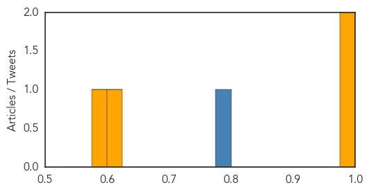
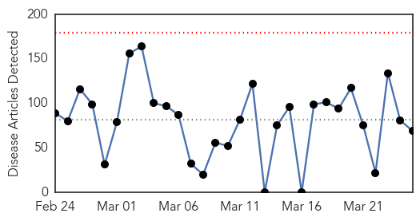
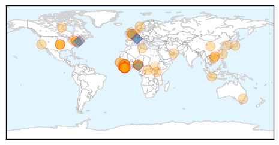
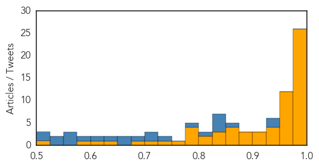

Cholera
30-Day Web Trend
0 alerts, 0 warnings

30-Day Twitter Trend
0 alerts, 0 warnings

Article Locations
Article Confidences
Top Articles:
Top Tweets:
- 0.783
- Hubris: The Recurring Pandemic ebola plague yellowfever cholera http://t.co/6urYDqekTp
Ebola
30-Day Web Trend
0 alerts, 0 warnings

30-Day Twitter Trend
Article Locations
Article Confidences
Top Articles:
- 1.000
- Ebola relapses a year later
- 1.000
- Ebola cases drop as progress shown in Guinea, Sierra Leone
- 0.999
- Latest Ebola Case in Liberia May Lead to More Cases
- 0.999
- Exposure Concerns Grow in Liberia After Diagnosis of First Ebola Case in Weeks
- 0.999
- Ebola Diaries All in a Days Work
- 0.999
- Progress to defeat Ebola fragile
- 0.999
- New Ebola trial vaccine 'safe', researchers report
- 0.999
- Guinea starts testing Merck vaccine in Ebola hotspots
- 0.998
- New Ebola trial vaccine ‘safe’
- 0.998
- Guinea starts testing Merck vaccine in Ebola hotspots
- 0.998
- BMJ Blogs: The BMJ Blog Archive Juliet Dobson: Understanding Ebola in Africa
- 0.997
- The New Dawn Liberia
- 0.997
- Lowest weekly total of Ebola cases in 2015 reported, UN health agency says
- 0.997
- New Ebola trial vaccine 'safe': Researchers
- 0.996
- Liberia reports 2 new Ebola cases
- 0.995
- 24,907 cases; 10,326 deaths
- 0.989
- Ebola vaccine could help ‘turn the tide of this epidemic,' WHO hopes
- 0.988
- MSF and WHO trade accusations over epidemic response
- 0.988
- Guinea tests Canadian-developed Ebola vaccine in hot spot
- 0.987
- Ebola veterans warn that vigilance is still needed as case numbers drop
- 0.985
- The Economist explains: What zoonotic diseases are, and how to stop them
- 0.985
- WHO denies politics swayed Ebola emergency declaration
- 0.984
- Guinea tests Canadian-developed Ebola vaccine in hot spot
- 0.983
- Welcome to the Expotimes News
- 0.982
- Ebola: 1 million pounds grant to develop ‘in the field' test
- 0.978
- Ebola vaccine trial launches in Guinea; Chinese vaccine test detailed
- 0.975
- Pambazuka News : Health & HIV
- 0.973
- Ebola Vaccine Trial Starts in Guinea
- 0.971
- Liberia Consulate Praised for Role in ACBC Donation
- 0.965
- President Koroma calls for final push to flush out Ebola
- 0.965
- Study: Ebola takes worst toll on babies, other young kids
- 0.963
- Perfect Science
- 0.963
- Perfect Science
- 0.960
- Liberia Deserves Nobel Prize
- 0.960
- ODF Communities in Margibi Didn't Experience Ebola Virus
- 0.956
- Liberia at the one-year mark of the Ebola outbreak
- 0.955
- Quarantine yes/no?
- 0.952
- How Did Ebola Volunteers Know Where To Go In Liberia? Crowdsourcing!
- 0.947
- Ebola more deadly for young children
- 0.941
- African Ambassadors’ Spouses in Addis Ababa join the fight against Ebola
- 0.936
- African Ambassadors’ Spouses in Addis Ababa join the fight against Ebola
- 0.925
- West and Central Africa Region Weekly Humanitarian snapshot (17 – 23 Mar 2015) - Côte d'Ivoire
- 0.912
- Sierra Leone: Rebuilding Sierra Leone's health care begins with eco-friendly disposal of medical waste
- 0.903
- Ebola-hit Sierra Leone delays school reopening - Sierra Leone
- 0.903
- Nigeria has no designated port for health activities –Director, Port Health
- 0.899
- Unsafe Burials Perpetuate Ebola in Sierra Leone
- 0.895
- Liberia: “We will maintain the fight against Ebola” - Liberia
- 0.895
- Ebola-hit Sierra Leone delays school reopening
- 0.869
- Canberra hospitals practice identifying and treating Ebola cases
- 0.864
- Ebola crisis: Sierra Leone forced to delay schools re-opening for 2 weeks as virus spreads
Showing top 50 articles...
Top Tweets:
- 0.943
- Those receiving the experimental Ebola vaccine in Guinea are contacts of recently Ebola-infected people who have given consent
- 0.939
- Experimental Ebola vaccine going through efficacy trial in an Ebola-affected community in Basse-Guinée Guinea this week
- 0.869
- Who discovered Ebola? 15 scientists authored 3 concurrently published papers describing new virus. More worked 1st outbreak investigation.
- 0.840
- 'Ebola Virus Disease among Children in West Africa' http://t.co/rsYc3JH3Z8
- 0.830
- RT: Ebola Alert WBFN implement web-based conversation among stakeholders on the emerging science of Ebola on MNCH…
- 0.827
- Study announces a durable vaccine for Ebola - Medical Xpress http://t.co/o5OEAobMvn ebola EVD
- 0.826
- RT: SierraLeone's Ministry of Health recorded two new cases of Ebola on Monday after consistently low case numbers…
- 0.803
- Mercy Kennady Icon Of The Ebola Epidemic Has A New Life - Huffington Post http://t.co/g935AoSsBS ebola EVD
- 0.791
- Trial aims to create ‘ring of immunity’ around Ebola-infected people by vaccinating their contacts to stop the virus from spreading
- 0.737
- How Liberia's President Survived The Ebola Crisis - Forbes http://t.co/nM0qOCLS2K ebola EVD
- 0.723
- Official: Ebola Survivor May Have Infected New Liberia Case - ABC News http://t.co/Da0EO6QDHq ebola EVD
- 0.704
- RT: Ebola survivors face risk of vision problems and PTSD West Africa unprepared for future health crises despite aid http…
- 0.691
- Ebola Vaccine Trial Starts in Guinea - TIME http://t.co/f7j4HNgzDA ebola EVD
- 0.670
- Who discovered Ebola? It was not 1 individual. Labs in Belgium Britain & @CDCgov credited - later proved the virus from Zaire was new. 1/2
- 0.668
- RT: Over 15 health orgs will share info for Ebola response in webinars w/ @mpoweringhealth & @EbolaAlert http…
- 0.627
- Ebola is most deadly among babies young children study finds - Reuters http://t.co/tnh4rkxiBX ebola EVD
- 0.619
- How Did Ebola Volunteers Know Where To Go In Liberia? Crowdsourcing! - NPR (blog) http://t.co/i1J6NrCCkQ ebola EVD
- 0.598
- Spotlighting hometown heroes: Matoon IL native Julian Grass helped respond to the Ebola outbreak in Sierra Leone. http://t.co/P5w5PaSW6M
- 0.567
- Exposure Concerns Grow in Liberia After Diagnosis of First Ebola Case in Weeks - New York Times http://t.co/HvcdO8qf33 ebola EVD
- 0.566
- Approx. 10000 ppl to be vaccinated w/ experimental Ebola vaccine within a 6-8 week period volunteers to be followed for 3 months Guinea
- 0.562
- New Ebola trial vaccine 'safe': researchers - Yahoo News http://t.co/v8Q2WOM5Ir ebola EVD
- 0.540
- 1 year after the outbreak doctor and communicable disease expert documents his experience with first cases of Ebola http://t.co/nicQnuAuEu
- 0.536
- Fort Benning soldiers return home after battling Ebola - Chattanooga Times Free Press http://t.co/deSCrYn0En ebola EVD
- 0.516
- Super Slick Coatings Conquer Ketchup But What About Ebola? - KPBS http://t.co/bBrPn4X4yG ebola EVD
- 0.514
- Study: Ebola Takes Worst Toll on Babies Other Young Kids - ABC News http://t.co/zrwKnCA0Fc ebola EVD